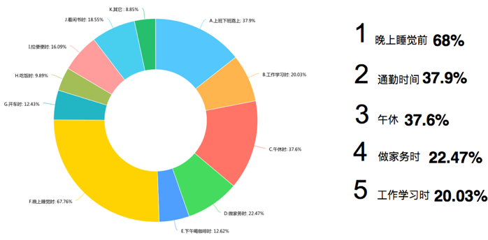

有关声音的应用在APP市场中多不胜数，它成为我们生活中不可或缺的一个组成部分。但目前市面上的应用界面大多操作复杂抑或资源爆炸，这使我们在快节奏的生活中无形的增加了学习成本。
试想一下，当你在散步时想立刻想听一段舒缓的音乐；当你在健身房跑步机上想定时听一段燃爆的音；或者你想利用上下班开车的空档了解一些感兴趣的知识，却一直到不到自己喜欢的节目……
所以，如何能让用户简单，快速的听到他们想听的东西就成了我们接下来要解决的问题。
调 研 基 本 概 述
调研目的：找到现在收听移动音频这个行为的core problem，提出合理解决方案。
Secondary research：了解用户的基本情况
深度用户访谈：深入了解用户的收听移动音频这个行为，使用偏好，使用中的痛点。受访者：32名有收听移动音频的经历和习惯的人采访方式：面对面访问或者信息对话访问
竞品分析：了解市面上现有同类型产品的现状，寻找设计机会
根据报告显示
80%以上用户年龄层在18-34岁之间

用户使用听书类APP40%以上超过1小时
用户使用场景TOP5
其它信息
3个月以上的APP使用者占60%；每天使用听书类APP的用户占74%以上；收听人群性别比例均衡 - 男性：54%，女性：56%
用户类型
Active User：用户自己主导收听体验
Passive User：用户被动接受内容的收听体验
用户需求
· 寻找/决定接下来要听的资源
Active User：用户自己主导收听体验会需要比较多的时间规划收听的内容。
Passive User：会因为难决定而放弃使用。
“插上耳机打开app 选中播放曲目 调整声音 然后就边骑车边听了”
· 决定之后开始听，听的过程中相关操作有根据环境调整音量、回听、跳转节目
“在路上总需要调整音量，路上的嘈杂程度不一样”
· 本次听完之后，下次返回收听
“我希望一打开就直接进上次的播放的界面，现在每次都要先选听什么很烦”
“每次打开app，如果是有章节的节目，会进入收听记录找，然后播放。如果是没有顺序和章节的 节目，会习惯性的进入我的收藏。”
目标用户使用场景
· 用户使用听书类软件的情景大多是routinely work，在手和眼睛被占用或者不便的情况下。
“一般是在收拾东西的时候，收拾屋子的时候啊，洗漱的时候，戴耳机走在路上的所有时候。 在车上的时候。出去玩儿的路上的时候”
“走在路上带着耳机就好了，不用看着屏幕”
· 在路上的情景下很多用户都会遇到的问题是外部环境的嘈杂会改变，在开始收听的时候需要调节音量，过程中也需要调节音量
· 通过场景可以让选择资源变得简单
“sacred初始的几种音乐刚好很匹配我的几个需求 某个名为提升智力的音乐我学习的时候听 还能有点心理安慰『降压放松』和『深度催眠』的晚上音乐睡前 或白天小憩时听，『打坐冥想时听』”
· 使用情景是只用双手，不用脑子。通过收听来让脑子活动起来。
“一般在家的话，边听边可以做其他事情。不需要太多注意力的事情”
· 特殊场景：睡前。对睡前模式的要求比较多，在睡前希望放松和助眠。
“睡前不喜欢有亮光”
“还没睡着呢，再来15分钟”
“睡前有时会听一些助眠的，定时十五分钟自动关闭这样子”
“睡前听英文小说，有助于睡眠。听完一个章节，退出app 再去睡觉”
“听完小说，关闭，入睡。很难入睡。从有睡意到睡着 要很久。”
使用原因
· 放松
“访谈节目一般是两个人在聊，听的时候觉得很轻松。”
“稍微有一点内容，又很轻松，可以一边听着一边做其他事情。”
“放松。不在乎听的是什么”
· 合理利用时间
“路上听是因为 路上不方便做别的事情 又想充分利用时间 其他时候都有事情要忙 除非很闲或者调整心情”
“骑车所以不方面同时做别的事情 就想利用路上的时间听会儿英语”
“在做家务or整理房间时，想不到要听的东西的时候 会选择听节奏不紧张的电视剧。听听声音，就可以知道 发生的剧情。”
· 给自己私人的空间
“上下班有时候听不是为了听，一部分为了屏蔽噪音。错过的没关系，这周都听这个”
· 提神
“在需要提神的时候听：开长途车的时候”
因为音频本身的性质，用户收听音频需要比较大的成本（试听比较久，无法快速浏览）才能判断所收听的资源的优劣和是否喜欢。这导致了目前用户在无法快速的找到自己当前情景和状态下想听的音频资源。
于是我们决定通过设计提高用户和资源的匹配度，提升用户到他想要的资源的匹配效率来解决问题。
1、改进onboarding体验，提前调查用户取向：收听内容的偏好，收听习惯（passive or active），声音偏好（萝莉声，大叔声）。通过改善onboarding体验，把因为内容太多太杂而找不到内容放弃app的用户留住，使得第一次用户慢慢变成深度用户。
2、听资源的寻找模式，根据用户收听内容偏好个性化推荐，用户对推荐内容可以不感兴趣来进一步优化推荐
3、增加好友推荐功能，好友可以推荐收听的节目，可以根据自己品味创建收听合集；收听内容取向相似的人相互follow来得到喜欢的内容推荐
4、让用户方便的在passive和active模式之间切换
5、为特殊场景设计：睡前的模式；开车（安全性：连上蓝牙之后提醒）
用户引导
睡前
好友推荐与互动